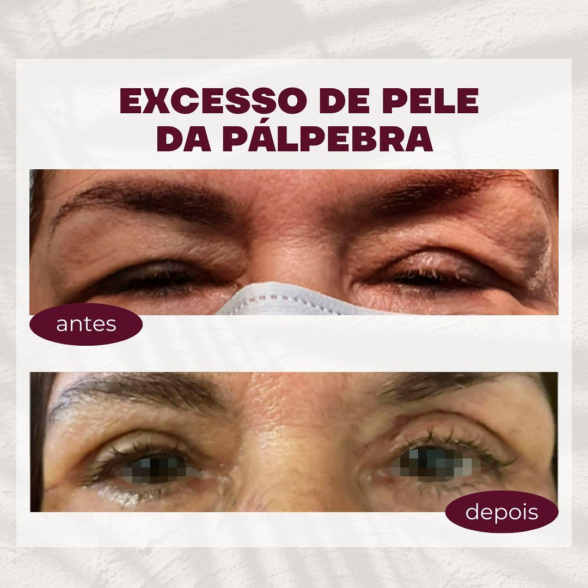
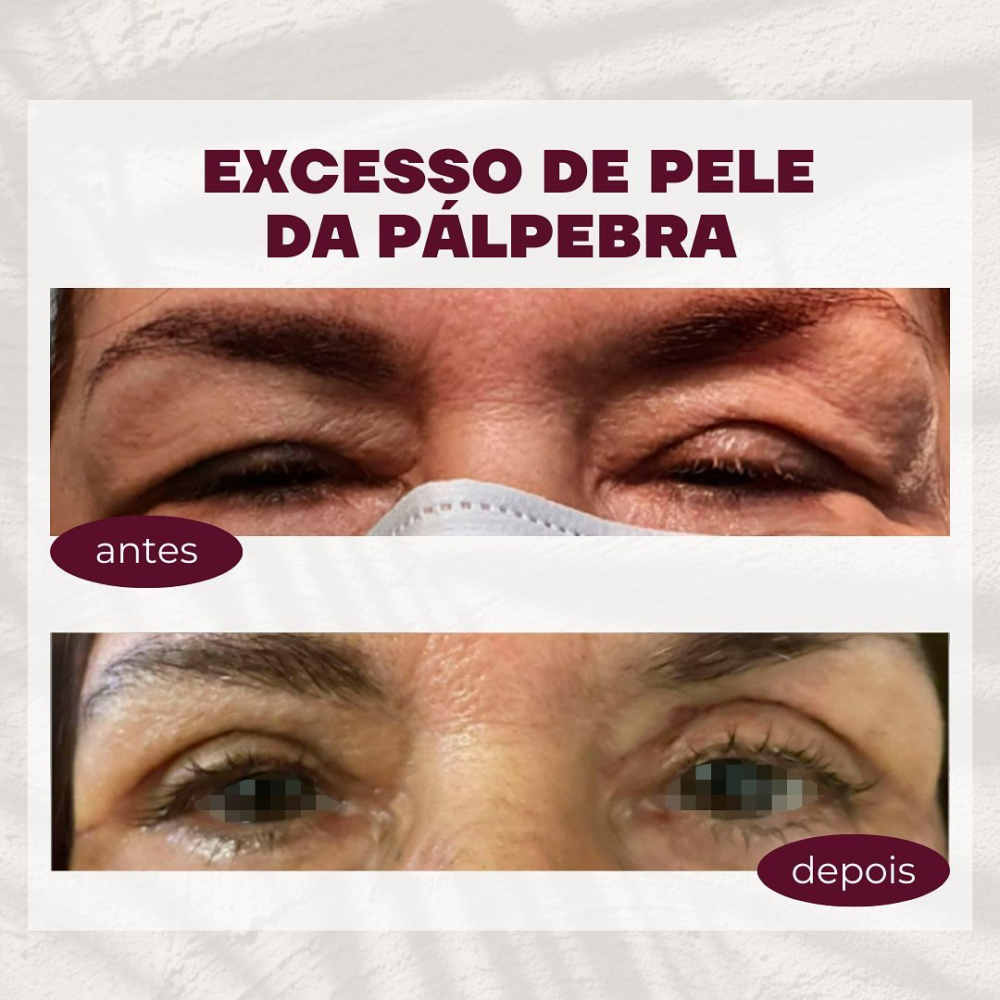

Dra. JULIANE MOLEDO
OFTALMOLOGIA E MEDICINA
A Dra. Juliane é uma médica altamente qualificada, especializada em cuidados com a pele e procedimentos estéticos. Ela está sempre buscando se manter à frente das últimas tendências, pesquisas e avanços científicos.
Ao optar por se consultar com a Dra. Juliane Moledo, você estará escolhendo cuidados personalizados e atenção individualizada. Ela entende que cada paciente é único, com necessidades e desejos específicos. Sua abordagem holística leva em consideração sua história médica, estilo de vida e objetivos pessoais para desenvolver um plano de tratamento personalizado que seja perfeito.


DEPOIMENTOS DE MEUS PACIENTES
Eu tive uma experiência incrível com a Dra. Juliane, ela é uma médica extremamente habilidosa e atenciosa. Ela me ajudou a alcançar os resultados que eu desejava e sempre me fez sentir confortável durante todo o processo. Recomendo-a sem hesitação!
Helena Rodrigues
Obrigado, Dra. Juliane, por me ajudar a recuperar minha autoconfiança. Me guiou durante todo o processo, explicando detalhadamente cada procedimento. Estou extremamente satisfeito com os resultados e sou grato por tê-la como minha médica.
Maria Eduarda
A Dra. Juliane é uma profissional excepcional. Sua gentileza e empatia me fizeram sentir confortável desde a primeira consulta. Ela ouviu minhas preocupações e desenvolveu um plano de tratamento personalizado para mim. Os resultados que obtive foram além das minhas expectativas.
Camila Silva
ANTES E DEPOIS DE ALGUNS PACIENTES
 -
-
-
-
PROCEDIMENTOS REALIZADOS
Botox
O botox, é uma substância que promove a paralisia temporária da musculatura. Sua aplicação é indicada para amenizar as rugas dinâmicas e linhas de expressão.
Peeling
Através de uma descamação da pele, o peeling estimula a renovação das celulas promovendo melhora da qualidade, da flacidez e diminuição de manchas da pele.
Blefaroplastia
A blefaroplastia é um procedimento estético que pode ser cirúrgico ou não dependo da necessidade de cada paciente. Promove a abertura do olhar eliminando o olhar triste.
Bolsas de gordura
As bolsas ao redor dos olhos são consequência direta do acúmulo de líquido ou gordura na região. Essa concentração de substâncias oferece o aspecto da bolsa de gordura.
Fios de sustentação
Os Fios de Sustentação podem ser de tração ou de bioestímulo. A escolha depende do resultado desejado.
Então, por que esperar mais tempo para alcançar a aparência dos seus sonhos?
Não perca a oportunidade de se sentir e parecer incrível. Marque sua consulta agora mesmo!
PRÉ AGENDAMENTO
Visite
nosso
consultório
Av Nossa Senhora de Copacabana, 1052
Sala 803